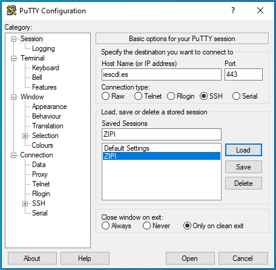
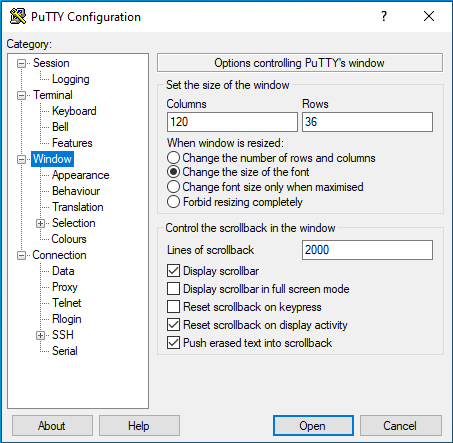
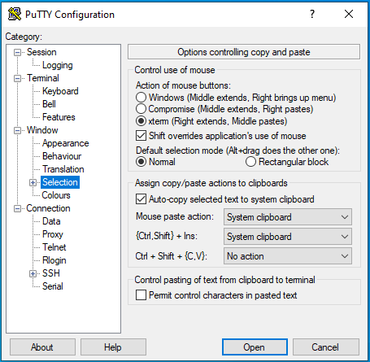
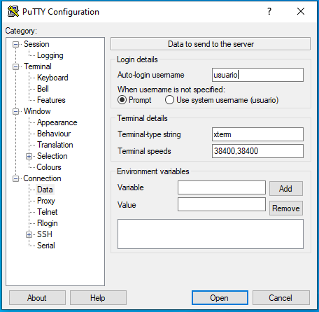

4.5.1. Instalación¶
debian, descontados adicionales, dispone de tres paquetes relacionados con openssh:
openssh-client, que instala el cliente y que viene de serie incluso en la instalación más básica.
openssh-server, que instala el servidor en sí.
El metapaquete ssh, que instala los dos anteriores.
Así pues, basta con hacer:
# apt-get install ssh
para proceder a la instalación del servidor, la cual, además, dejará el servidor en funcionamiento. Como en el caso de cualquier otro servicio, pueden usarse tanto invoke-rc.d como systemctl para manipularlo.
4.5.2. Configuración¶
Todo la configuración del servidor se encuentra dentro del directorio
/etc/ssh:
Las claves pública y privada del servidor con nombre
ssh_host_*. Hay varias parejas porque se generan con varios algoritmos de cifrado[1].El fichero
ssh_config, que es, en realidad, el fichero general de configuración del cliente.El fichero
sshd_config, que será el que tengamos que editar si queremos alterar la configuración.
El fichero está profusamente comentado y, además, tiene página de manual propia por lo que aquí sólo se comentarán algunas directivas que se consideran de interés. En este fichero las directivas tienen su valor predeterminado, por lo que comentar o dejar descomentada una línea, tiene el mismo efecto, si no se modifica además el valor:
Port 22
Es el puerto de escucha. Lo habitual es que el servicio SSH escuche en el puesto 22/TCP y que este valor no se cambie. Es posible, sin embargo, que este puerto sea inaccesibles desde redes remotas fiscalizadas por un cortafuegos[2]:
PermitEmptyPasswords no
Por razones de seguridad lo habitual es impedir que usuarios con contraseña vacía puedan acceder al servidor:
PermitRootLogin prohibit-password
Define si el administrador puede directamente ingresar en el servidor. Lo aconsejable es impedirlo, porque en cuanto un servidor SSH es accesible, arreciando los ataques de fuerza bruta y es muy común que uno de los usuarios de los que prueben contraseñas sea root. El valor predeterminado es que el acceso sólo se permita mediante el uso de certificado de usuario:
AllowTcpForwarding yes
AllowTcpForwarding habilita la posibilidad de hacer los utilísimos túneles SSH. Si se desea realizar una desconexión automática tres un tiempo de inactividad (p.e. 180 segundos) puede hacerse:
ClientAliveInterval 180
ClientAliveCountMax 0
lo cual es muy útil para evitar que se queden inadvertidamente abiertas sesiones[3].
Advertencia
A partir de la versión 8.2 (véanse las notas de lanzamiento), esta configuración ya no
funciona, porque dar un valor de 0 a ClientAliveCountMax
deshabilita el mecanismo que provocaba la desconexión automática (y que se
explica en la nota al pie anterior). No hay, pues, forma de que el servidor
fuerce la desconexión, pero sí de que lo haga el propio cliente, si así se
fijó en su configuración dentro de /etc/ssh/ssh_config o
~/.ssh/config:
ServerAliveInterval 180
ServerAliveCountMax 0
o se decidió al conectar:
$ ssh -o "ServerAliveInterval=180" -o "ServerAliveCountMax=0" usuario@servidor
ya que para ServerAliveCountMax=0 el efecto sigue siendo el mismo.
Por otro lado:
Banner /etc/ssh/ssh_banner
define el fichero cuyo contenido se mostrará justamente tras la conexión y antes de la autenticación[4]. El valor predeterminado es none, o sea, ninguno. También puede mostrarse un mensaje después de haberse autenticado por completo:
PrintMotd yes
En este caso, se mostrará el contenido de /etc/motd.
DenyGroups vetados
AllowGroups ftpusers administradores
Las directivas DenyUsers, AllowUsers, DenyGroups y AllowGroups permiten indicar usuarios y groups a los que se les permite (exclusivamente) o niega el acceso. El usuario entrante debe cumplir con todas las directivas incluidas en el fichero. En el ejemplo, sólo podrán acceder al servidor los usuarios que pertenezcan al grupo ftpusers o administradores y que, además, no pertenezcan al grupo vetados:
MaxStartups 3
MaxStartups indica el máximo número de conexiones no autenticadas simultáneas que admite el servidor[5]. En el ejemplo, por tanto, sólo podrá haber tres peticiones de autenticación produciéndose a la vez. Es útil ajustar este valor para minimizar los riesgos de ataques de fuerza bruta.
Match Group ftpusers
X11Forwarding no
AllowTcpForwarding no
ForceCommand internal-sftp
La directiva Match da la posibilidad de sobrescribir la configuración global para las conexiones que cumplan los criterios especificados[6]. Por ejemplo, en este caso, a los usuarios que pertenecen al grupo ftpusers sólo se les permite el uso del servidor para transferir ficheros[7].
Ver también
Si el servidor SSH se expone en internet, no tardará en recibir ataques de fuerza bruta que persiguen el acceso a la máquina. Siempre es más que recomendable configurar algún mecanismo que los inutilice.
4.5.3. Clientes¶
Por clientes del servidor entenderemos bajo este epígrafe sólo aquellos destinados a la administración interactiva del servidor.
4.5.3.1. OpenSSH¶
Es el cliente habitual en sistemas unix. El modo básico de usarlo es el siguiente:
$ ssh usuario_remoto@servidor
es decir, indicar el usuario de que se dispone en el servidor y el nombre o la ip del mismo. Si se omite el nombre de usuario, se tomará el mismo que el del usuario local. La consecuencia de esta orden es que se abrirá una consola interactiva (una sesión de la shell predefinida para tal usuario) en el servidor, tal como si hubiéramos ingresado en la máquina local. Es posible añadir argumentos a la orden, por ejemplo:
$ ssh -p443 usuario_remoto@servidor
para conectarse al puerto 443 en vez de al 22, como es habitual. Es posible también ejecutar un comando en el servidor sin llegar a usar el nodo interactivo simplemente añadiéndolo a continuación:
$ ssh usuario_remoto@servidor ls -l
Si se prefiere también incluir la orden entre comillas:
$ ssh usuario_remoto@servidor "ls -l"
Advertencia
Las comillas cobran importancia cuando queremos evitar que el bash local haga interpretaciones de la orden (p.e. expanda), porque queremos que estas las haga el servidor remoto.
Este cliente permite incluir configuración dentro de /etc/ssh/ssh_config
(configuración general) y ~/.ssh/config (configuración personal del
usuario). Como en el caso de la configuración del servidor, pueden usarse
directivas globales (que afectan a todas las conexiones) y particulares con
Match o, en este caso, también Host. Por ejemplo:
# Configuración en ~/.ssh/config
ServerAliveInterval 120
ServerAliveCountMax 0
Host zipi
Hostname iescdl.es
User perico
Port 443
En esta configuración hemos incluido dos directivas globales que fuerzan la desconexión del cliente tras dos minutos de inactividad. Son simétricas a las ya vistas en el servidor, y en este caso el que se desconecta es el cliente y no el servidor. Son útiles si queremos provocar desconexiones automáticas y en el servidor no se ha hecho configuración alguna al respecto.
Además se ha definido la conexión a una máquina, de manera que la orden:
$ ssh zipi
es equivalente a:
$ ssh -p443 perico@iescdl.es
Lo que no puede hacerse es añadir también la contraseña, porque openssh obliga a que esta se facilite siempre de manera interactiva. Para evitarlo, es necesario recurrir a otras estrategias.
4.5.3.2. Putty¶
Es el cliente más habitual en los sistemas Windows[8], aunque las últimas versiones de Windows traen el cliente de OpenSSH para su Powershell. Lo cierto es que es un excelente cliente porque es efectivo, no requiere siquiera instalación y, además, soporta otros protocolos como telnet o conexión serial, lo que lo hace utilísimo en muchos casos.
Establecer con este programa una conexión SSH básica es bastante sencillo:
En la pantalla inicial (la sección de «Sesión») puede definirse la máquina a la que deseamos conectarnos, el puerto, el tipo de conexión (SSH en nuestro caso) y poner un nombre a la configuración de la conexión para poder establecer la conexión en otras ocasiones sin necesidad de volver a configurar de cero. Sin embargo, si nuestra intención es afinar más la configuración es mejor acceder al resto de pantallas de configuración y una vez acabadas todas ellas, volver a esta para grabar.
En la sección «Windows» es posible cambiar el número de filas y columnas (por ejemplo, a 120x36) lo cual es especialmente útil si decidimos que el tamaño de la fuente cambie al cambiar el tamaño de la ventana (también definible en esta sección):
Si somos usuarios habituales de Linux, en Windows>Selection es muy conveniente ordenar que la selección se haga como en XTerm, esto es, el botón izquierdo para seleccionar y el botón central para pegar.
En «Connection>Data» podemos especificar el nombre del usuario (no la contraseña).

Hay otras configuraciones interesantes relacionadas con un uso más avanzado (autenticación con clave, túneles, etc.) que por ese motivo no se citan aquí.
Notas al pie